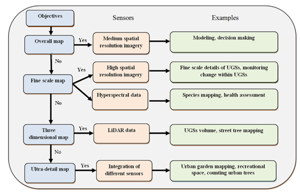

7 Classification I
7.1 Summary
This week was about classification, which basically is turning raw satellite imagery into something meaningful. Thus, instead of looking at raw images, classification lets us extract useful information by categorizing them into different classes like urban, vegetation, water, etc. This is done by using machine learning algorithms like Support Vector Machines (SVM) or Random Forest to analysis the pixel values and assign them to different classes.
An example is the use of Landsat data to map urban growth. Taking the case of Iskandar, Malaysia (Figure 1), Landsat imagery was classified to show land cover types—like urban built-up areas, vegetation, and waterbodies (Yasin et al., 2022).
Classification can be practically useful in monitoring city growth of time to uncover trends and use it for future planning.
7.1.1 Choosing the Right Sensor
The type of sensor used makes a big difference in how accurate your classification turns out. For instance, hyperspectral sensors can capture really fine details—perfect for plants species mapping or vegetation health. But for general land cover, a multispectral sensor like Landsat or Sentinel-2 might be enough. This is just like selecting a satellite based on the bands. Figure 2 shows highlights sensors to objectives.

7.1.2 Classification Methods & SVM
There are two basic types of classification methods:
- Classification trees – for categories like land cover
- Regression trees – for continuous data like temperature
But both can suffer from overfitting—where the model works too well on the training data but fails on new input. To avoid this, Support Vector Machines (SVM) are adopted used.
SVM is a supervised machine learning model that finds the best boundary (called a hyperplane) between two classes—like urban and vegetation (see Figure 3). It’s great for high-dimensional data like hyperspectral imagery. It uses kernel functions (like RBF or polynomial) and parameters like C and gamma to tune the model (Mountrakis et al., 2011).
SVMs perform well with small datasets and generalize better than decision trees and neural networks, though they’re slower with big data—where Random Forest or deep learning might be more practical.
I will personally mostly use SVM for my classification tasks. Then use a Classification trees or Regression trees as a validation check and also figure out if my data is too big for SVM.
7.2 Application
Support Vector Machines (SVM) have been widely applied in classification tasks. I will refer to two studies that used SVM in the context of urban analysis.
The first study, by Zylshal et al. (2016), focused on identifying urban green spaces in Jakarta using high-resolution Pleiades-1A imagery. The classification process involved defining land cover classes—vegetation, non-vegetation, and water—followed by training the SVM model with a small dataset. Since SVM is a binary classifier, a “one-against-one” strategy was used to classify each pair of land cover types. Although the study did not state the exact input features, the data processing flowchart (figure 4) shows NDVI, NDWI and MSAVI used likely as input features, given their relevance in vegetation analysis.
Instead of classifying individual pixels, the study used multiresolution segmentation to group pixels into meaningful objects before applying classification. The output was further refined using expert rules and validated through an accuracy assessment, achieving 86% accuracy. This study effectively demonstrated the integration of SVM with Object-Based Image Analysis (OBIA) for high-resolution classification.
The second study, by Karimi et al. (2019), applied SVM to predict urban expansion in Guilford County, North Carolina, using data from the National Land Cover Database (USGS) and other supporting datasets. Unlike the first study’s spatial classification, this focused on temporal prediction, modeling the transition from “unbuilt” to “built” land as shown in figure 5.
To improve results, the model was tuned through kernel selection and parameter optimization. Because urban growth datasets are often imbalanced, with more unbuilt than built land, the study used strategic sampling to reduce bias. It achieved 78% accuracy, slightly lower than the first study, likely due to the larger dataset and the complexity of time-based prediction. SVM proved valuable in handling both continuous and categorical variables, making it well-suited for modeling urban growth trends.
7.2.1 Insights for applications
Both studies applied SVM as a binary classifier, but their approaches differed. One focused on spatial classification, while the other tackled temporal change prediction. The second study likely dealt with a larger dataset, which might explain its lower accuracy, as SVM tends to perform better on smaller datasets. This raises the question of how well SVM scales for large-scale urban studies. A possible improvement would be enhancing SVM models with other machine learning techniques to handle large datasets more efficiently.
7.3 Reflections
This week deepened my understanding of how Support Vector Machines (SVM) are applied in urban classification tasks. Looking at both studies helped me see the flexibility—but also the limits—of the model.
In the first study by Zylshal et al. (2016), the use of high-resolution imagery and indices like NDVI, NDWI, and MSAVI made sense for mapping urban green spaces in Jakarta. What stood out was the use of multiresolution segmentation—grouping pixels into meaningful objects before applying SVM. That, along with expert-based refinement, led to 86% accuracy, showing how SVM paired with Object-Based Image Analysis (OBIA) can be powerful in detailed, small-scale studies.
In contrast, the second study by Karimi et al. (2019) focused on predicting urban expansion over time in North Carolina. It used broader datasets and aimed to model how “unbuilt” land becomes “built.” The team fine-tuned the model and applied strategic sampling to handle imbalanced classes—common in urban growth studies. While it achieved 78% accuracy, the lower performance reflects the challenges of using SVM on larger, more complex datasets.
What I found interesting is that both studies relied on SVM as a binary classifier, yet their outcomes varied based on scale, data volume, and focus—spatial vs. temporal. This raised an important question: how scalable is SVM for large-scale urban analysis?
SVM works well with limited, high-quality data, but in broader applications like national urban expansion studies, it might struggle with processing speed and generalization. A key takeaway is that SVM could be enhanced by hybrid approaches, for instance, integrating it with Random Forest, neural networks, or rule-based methods for better scalability.
Overall, this week showed me that classification is not just a technical process—it’s about tailoring tools to fit data types, goals, and scale, and SVM is just one part of a growing toolbox in urban remote sensing.